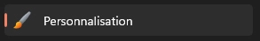
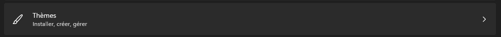
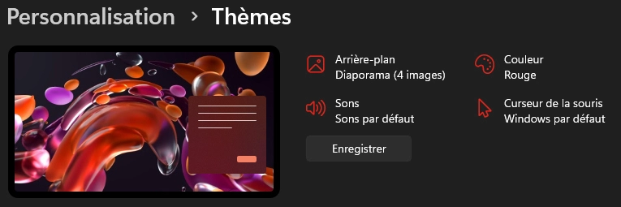
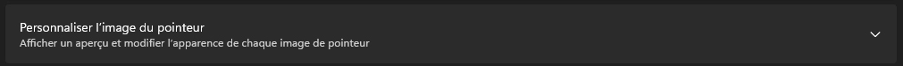
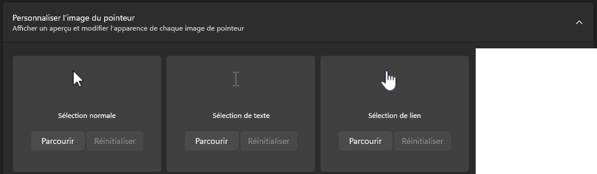

Les Crosshairs
Le Guide
étape 1
Allez dans la barre de recherche de Windows et tapez
Paramètres :
étape 2
Sur votre gauche, vous aurez plusieurs paramètres. Cliquez su
Personnalisation :

étape 3
Vous arriverez sur l’onglet « Personnalisation ». Dans cet onglet, cliquez ensuite sur
Thèmes :

étape 4
Dans ce nouvel onglet « Thèmes », nous allons chercher l’un des quatre paramètres disponibles en haut de la page
Curseur de la souris :

étape 5
Plus qu’à cliquer sur
Personnaliser l'image du pointeur :

étape 6
Enfin, vous pourrez ici modifier TOUS les curseurs disponibles grâce au fichier téléchargé en cliquant sur
Parcourir :
